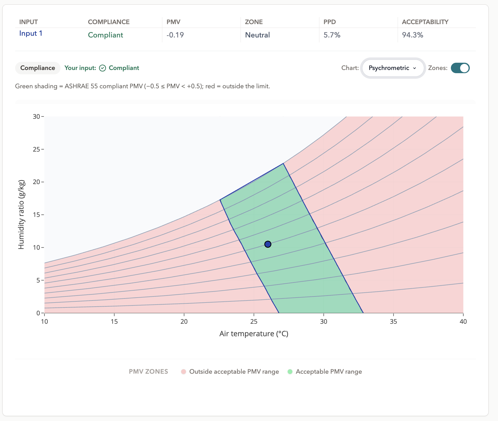
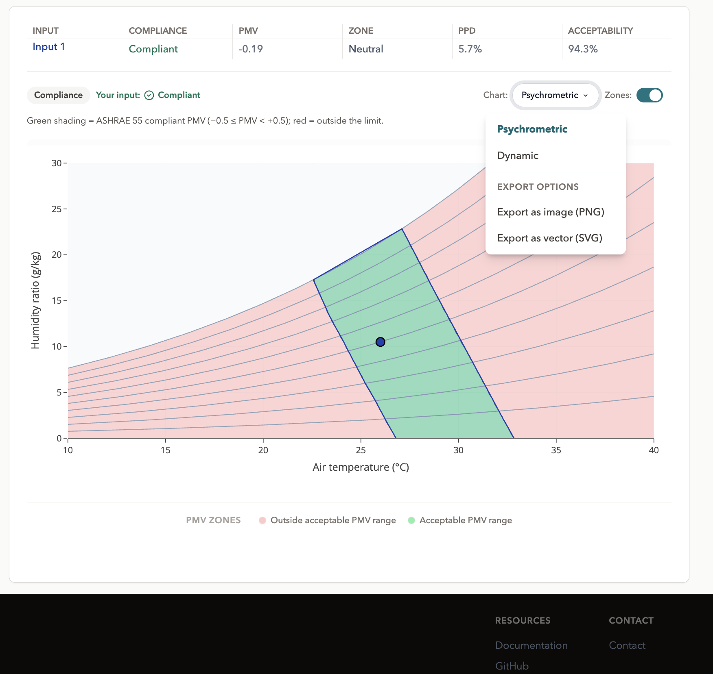

Charts and chart controls
Overview
Every calculation workspace has a chart panel to the right of the results. Charts are declared by the model rather than by the workspace, so the set available changes with the model you have selected PMV offers four, the adaptive models one, the simple indices one each.
All the controls sit in a row above the plot, and the legend below it.

The chart types
| Chart | Appears on | Shows |
|---|---|---|
| Psychrometric | PMV (both) | Humidity ratio against temperature, with relative-humidity isolines and the comfort zone. |
| Dynamic | Most models | A banded field over two quantities you choose, coloured by an output. |
| Heat loss | PMV (both) | The components of the body's heat loss against air temperature. |
| SET | PMV (both) | Standard effective temperature across the input range. |
| Adaptive | Adaptive (both) | Operative temperature against outdoor temperature, with the acceptability zones. |
| UTCI | UTCI | The index value across its full range, banded by stress category. |
| Body temperature | PHS | Predicted core temperature over the exposure, against its limit. |
| Water loss | PHS in Time-series | Cumulative sweat loss over the scenario, against its limit. |
The selector at the top of the panel switches between whichever of these the current model declares.
Chart controls
Axis selection
On field charts, an X and a Y picker list the quantities the model accepts. The inputs not on an axis are held at their panel values, so the chart is a slice through the model at the state you have set change an input that is not on an axis and the field redraws around the new state.
Each axis excludes the quantity the other one holds, since a chart of a quantity against itself is not a chart. Some models lock an axis where the second quantity is intrinsic to the index: Wind Chill keeps wind speed on Y.
Axis selection is most useful in Explore. On a compliance workspace the chart that matters is usually the one the standard is conventionally drawn on.
Output selection
Where a model produces more than one quantity worth plotting, an Output picker chooses which one colours the field. PHS offers three limiting exposure time, rectal temperature and predicted water loss and each carries its own default banding. Models with a single meaningful output do not show the picker.
The band editor
In Explore, the bands that classify the field can be edited: change a numeric edge, apply it, and the chart redraws. Reset returns the model's declared defaults.
Editing a band does not change the calculation. The model returns the same numbers for the same inputs; the bands are a classification laid over the result, so what changes is which region a point is reported to fall in. Compliance workspaces do not offer the editor, because their bands come from the standard.
The baseline picker
With compare mode on, the baseline picker chooses which input set the drawn zone or field belongs to. All visible points are plotted either way; only the region follows the baseline.
Legend
There is exactly one legend per chart and it sits below the plot band labels with their colours, and the input points. The same entries are used in an exported image, so the export matches the screen rather than being relabelled.
Hover
Hovering a field chart reports what is under the cursor: the axis values, the output there, and the band it falls in. The reading does not snap to the nearest plotted point, so you can probe anywhere on the field rather than only at your inputs.
Exporting a chart
The chart selector menu also carries the export options, sized for publication rather than for the screen:
| Option | Use for |
|---|---|
| PNG, single column | A raster image at single-column width slides, reports, quick sharing. |
| PNG, double column | A raster image at full page width. |
| SVG, single column | Vector at single-column width scales without loss, best for print and for journal submission. |
| SVG, double column | Vector at full page width. |
The exported file is named from the chart title, so a folder of exports stays identifiable. The export uses a layout tuned for publication the legend is placed below the plot as on screen, and the proportions match the chosen column width rather than the shape of your browser window.

Where to go next
- Explore where axis selection and the band editor come into their own.
- Compare mode the baseline picker in context.